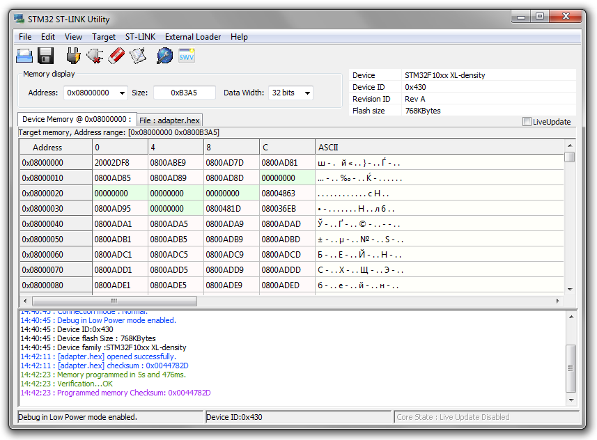
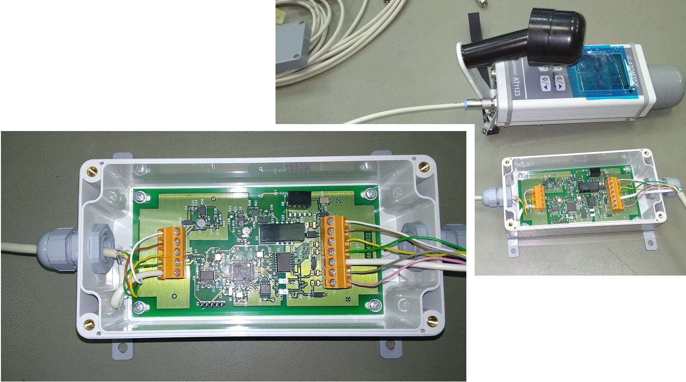
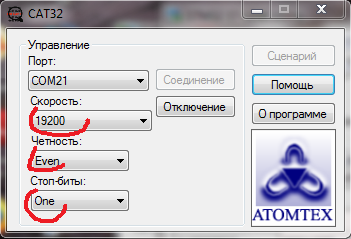
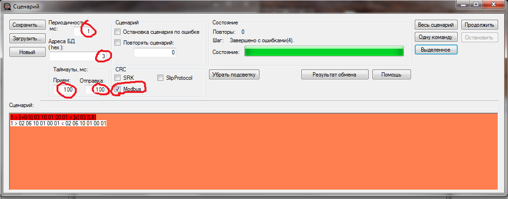
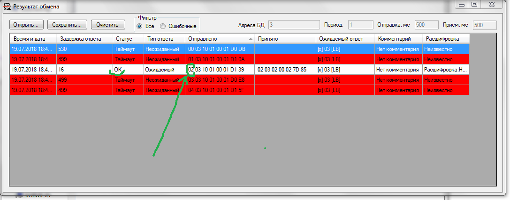
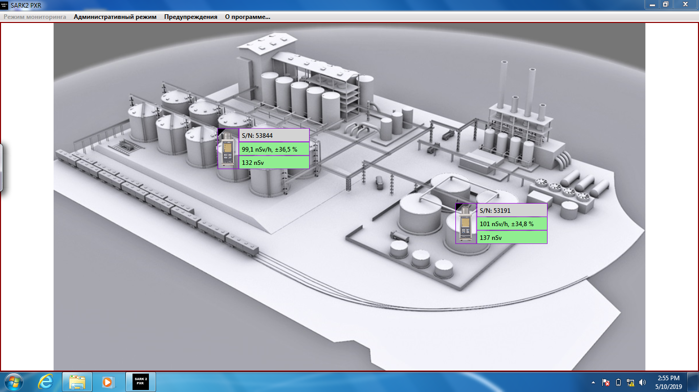
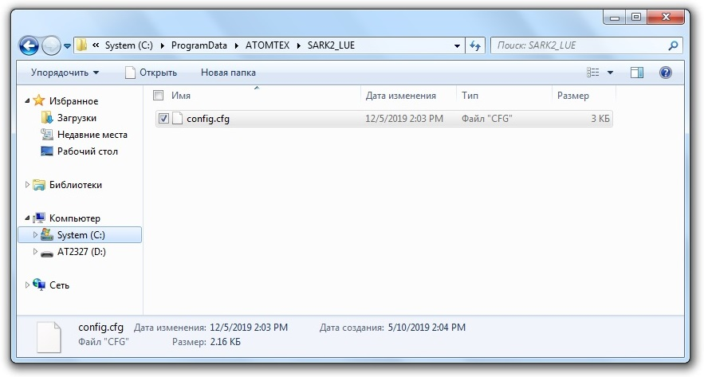

943-й адаптер интерфейсный(Сало). Прошивка
{kind=link}
{kind=link}
{kind=link}
При перепрошивке ОБЯЗАТЕЛЬНО стирать предыдущую прошивку

- Подключить плату программатора: BLS разъем к плате адаптера, mini-USB к компьютеру
- К плате адаптера подключить питание 12V: 1(-) 2(+)
- Открыть STM32 ST-Link 
- Target ⟶ Connect
- Target ⟶ Program & Verify
- Выбрать прошивку 943/adapter.hex (13.07.17)
- После прошивки на плате загорится второй красный светодиод
Подключение и настройка
- К 5-х колодке подключается 1123
- бел-кор-жел-зел-экр (желтый и зеленый подключаются наоборот!)
- Питание+ (коричневый) на 5х колодке НЕ ПОДКДЮЧАЕТСЯ!! на 1123 приборе будут сбои на адаптере. Запитывать от преобразователя!
- бел-кор-жел-зел-экр-сер-роз
- СРК с 943-им подключается к компу с помощью SARK2_PXR Через Sark PXR нельзя ни посмотреть адрес адаптера, ни установить желаемый. Для этих целей необходимо воспользоваться программой CAT32.
- Запустить CAT32_БАРК (/bin/release/Connections_automatic_tester.exe)
- Выбрать порт и следующие настройки: 
- В окне Сценариев установить следующие параметры 
- Для того, чтобы узнать, какой адрес адаптера, нужно ввести такую команду:
- В поле сценариев скопипастить команду и нажать кнопку "Одну команду"
- В окне "Результат обмена" появится такой список: 
- Одна из строк будет белой и с индификатором "ОК", это значит, что на запрос этого адреса адаптер ответил, остается посмотреть, какой адрес вызывался (на картинке стрелкой указано, где), на картинке это цифра 02, значит у адаптера второй адрес
- Для того, чтобы поменять адрес адаптеру, например со второго на первый, ввести такую команду:
1 > 02 06 10 01 00 01 < 02 06 10 01 00 01
- Вот такой будет ответ:
- (Рисунок)
- Здесь можно посмотреть список всех команд для Cat32
- Адаптеры с подключенными дозиметрами 1123 работают и настраиваются в программе SARK2 PXR. Чтобы настроить дозиметры, надо:
- Если система работает через Ethernet адаптер Moxa-5130, то, прежде всего, его необходимо настроить.
- В программе SARK2 PXR выбрать "административный режим" (если конфигурация запускается впервые, этот режим включится автоматически)
- Выбрать COM-порт для подключения
- Выбрать схему (рисунок на задний план)
- В окне администратора нажать поиск. Искать будет долго
- Выбрать поочередно все адаптеры и назначить им пороги
- Нажать "сохранить"
- Перезапустить программу, теперь она запустится в пользовательском режиме. Проверить присутствие всех датчиков, наличие счета на каждом из них 
256 > [i=0-255] 03 10 01 00 01 < [x] 03 [LB]
(Иногда необходимо проверить только, например 5 адресов (когда точно известно, что адрес не больше пяти, но при этом не хочется ждать перебора всех 256-и адресов), тогда команда будет такой:
5 > [i=0-5] 03 10 01 00 01 < [x] 03 [LB]
)
SARK2 PXR

Если нужно установить новые блоки с другими адресами, единственный способ
— удалить конфигурационный файл, C:\\ProgramData\ATOMTEX\SARK2_LUE\
здесь:
